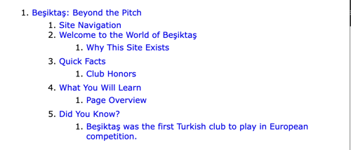

Color Palette
- Primary: Black (#000000)
- Accent: White (#FFFFFF)
- Highlight: Red (#FF0000)
Site Map
- index.html
- Homepage with intro, club overview, table of honors
- club.html
- Club identity, Çarşi fan culture, and stadium
- rivalries.html
- Derby details and recent results
- intrigue.html
- Ref drama, federation controversy, and media pressure
- site.html
- This page: color planning and page structure
- fans.html
- New subpage about Beşiktaş's international fan base and cultural reach.
- contact.html
- Contact page with personal intro and form to reach out
HTML5 Outline Screenshot
This screenshot shows the heading structure of index.html for validation purposes.
Week 4 Comment or Question
I found the project outline helpful, and it made me pay attention to proper HTML structure. The image part took a bit longer but was actually fun.
Project Color Palette
Background
Header / Nav
Accent (hover)
Visited Link